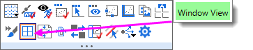

FAQ-1157 Warum werden die Beschriftungen meiner Hilfsstriche beim Exportieren eines Bildes oder Videos viel kleiner?
tick-label-export-small
Letztes Update: 26.10.2022
Wenn die Hilfsstrichsbeschriftungen in Ihrem exportierten Rasterbild (z. B. PNG) oder Video (z. B. AVI) recht klein erscheinen, prüfen Sie, ob sich Ihr Diagrammfenster in der Fensteransicht befindet.
Wenn Ihr Diagramm ein Browserdiagramm ist, beachten Sie, dass es standardmäßig in der Fensteransicht erstellt wurde.

Es gibt einige Lösungen:
- Als Erstes können Sie vor dem Export zur Seitenansicht wechseln:
- Klicken Sie gleich unter die Leiste mit dem Fenstertitel und prüfen Sie bei Erscheinen der Minisymbolleiste, dass KEIN rotes Häkchen neben der Schaltfläche Fensteransicht ist.
- Sollte sich dort ein rotes Häkchen befinden, entfernen Sie es.
- 
- Wenn Sie in eine Bilddatei exportieren, versuchen Sie, zu einem Vektorformat (z. B. SVG, EMF) zu wechseln.
Schlüsslwörter:Fensteransicht, Browserdiagramm, Raster, Vektor, Seitenansicht, SVG, EMF, AVI, GIF, TIFF